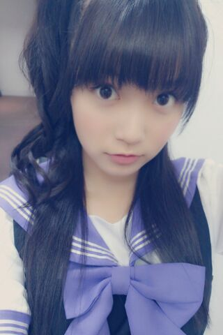
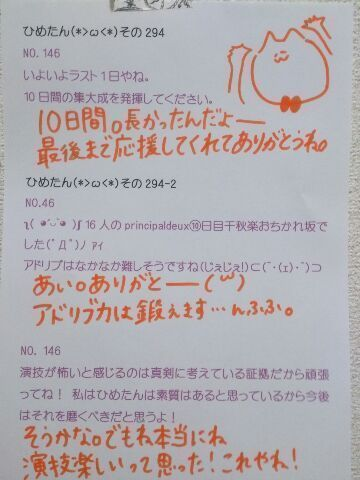

| 2013/08 15 Thu | ひめたん(*>ω<*)そ の326 |

安定のなかいさん\( ^ω^ )/
ひめたんがどーしてもアウカメで撮りたいって
わがままを言ったので
ひめたんが鏡を両手で持って
まりかがシャッター押してくれたので
ふたりとも手が元気な感じになっておりまーす
状況伝わるかなー
さて前回のNOGIBINGOのカラオケどぼんで
なんと歌わせていただいたのでしたー
報告って形になったのは理由があるんですー
あんねあんねあんねー緊張してね
いつもピッチおかしいねって言われるのに
あの日はさらに声ガクガクだったの。
だから告知しませんでしたー( ^ω^ )
黙っててごめんね( ^ω^ )( ^ω^ )
てことで
岡本真夜さんのTOMORROWを
歌わせていただきましたー
コメントなんか読んでると
いろんな方に観ていただいて嬉しす！
いやー思ったより高いんだあの台！
で、なんでこの曲にしたの？って
コメントがたくさんあったのでお答えすると
この歌すきなの(*^ω^*)
何だろう。この詞がとっても元気に
なれる感じがするじゃない？
涙の数だけ強くなれるよって。
この曲ね、ねーさんがちっちゃい頃に
めーっちゃおうちで練習してたらしいの
それでいっぱい聴いてたんだろうし
歌ってるねーさん楽しそー！って
ちっちゃい頃のひめたんは思ったんかなー
そんな思い出もある大事な曲です
いざ歌ってみると難しかったけどね(〃ω〃)
NOGIBINGOの制服写めばんっ

さてさてー
前にブログであれだけ
ストレート好評だったーとか言っといて
握手会でストレートしなくて
ほんとにごめんねー(´・ω・｀)
あのブログはフリだったろ？とか
ストレート期待してたのにー！て方が
いっぱいいらっしゃって。
うん近いうちにするから待っててー！
あっ「とける」の漢字
教えてくれてありがとー∩^ω^∩
ひめたんが書いたのを受けて
わざわざ調べてくださったみなさん
お疲れ様ですーごめんねー助かりましたー♪
あとね最近悩んでることがあって
おうちで目覚まし時計拾ったから
am4:40とかに設定したのちょっと前に
そしたらね毎日なり続けるの(´・ω・｀)
止まんないのよ止め方わからんのよ
電池１本抜いても目覚まし時計って動くのよ
助けてー！

 BLTさんTシャツを
BLTさんTシャツを
メンバーと交換しましたか？
してなーい(´・ω・｀)
中伊さんたちのブログて
いつも上下で隣同士ですけど、わざと
同じくらいの時間にupしてるんですかー？
言われてみればそうかもねー
打ち合わせまではさすがにしてないよー
ガールズルールの衣装って
自分が着たいチームのを着てるんですか？
希望はとっていただいたよー
あとは全体のバランスとかも
考えられてるんじゃないかな？
Zeppリハ浸けの毎日。
充実してるよー
今日もがんばるー！

(＊´・ω・＊)
コメント(360)
2013/08/15 09:00